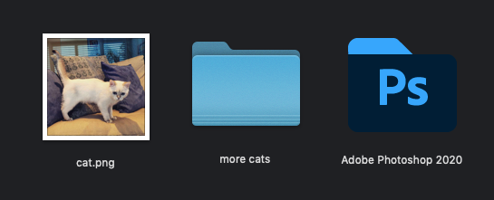
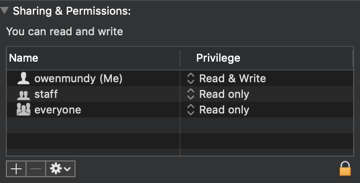
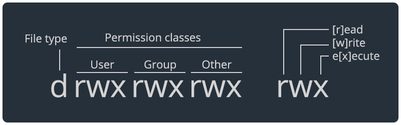
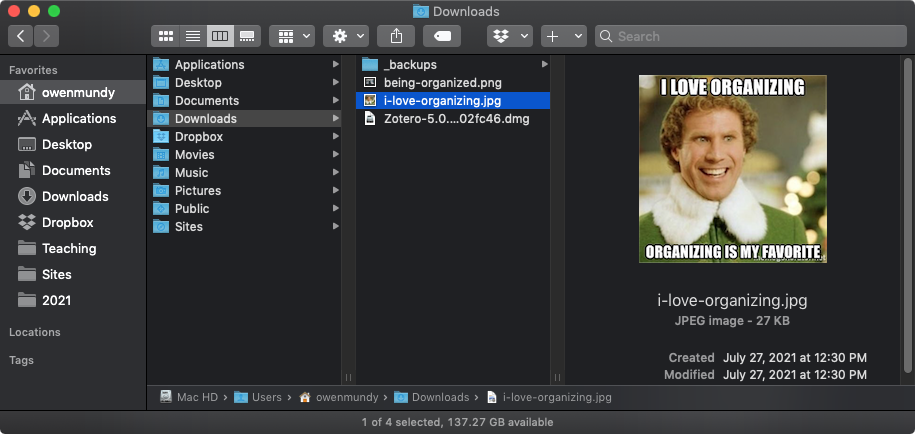

The Filesystem
Learn about all the files on your computer!
Contents
- Introduction
- About the filesystem
7 min - Discussion
5 min - File extensions
5 min - Hidden files
5 min - References
Introduction
Review the following sections and perform the activities on your own or with your group.
Perform the task(s) when you see this 👉 emoji
Learning Objectives
Students who complete the following will be able to:
- Describe basic computing concepts like files, folders, programs, users, and permissions
- List common file extensions and their purpose
- Explain what hidden files do and how to find them
- Demonstrate best practices for filesystem organization
About the filesystem

Files, folders, & programs
- Files are how computers organize and store data about discrete objects.
- Folders (a.k.a. "directories") are (also files) used to organize other files and folders.
- Programs (a.k.a. "applications" or "software") are (also files, often packaged with other files) that contain instructions for a computer to run.
- Force quit - what you can do if a program stops responding or becomes frozen on Mac and Windows.
Users and Permissions
- A User is a virtual identity that determines what someone can do on a computer.
- Every file, folder, and program has a set of Permissions which control which users are permitted to:
[r]eadto view or open a file[w]riteto modify, save, or delete a filee[x]ecuteto run the file
Programs need special permissions so the operating system (OS) knows it is safe to execute the instructions within.
Permissions sets define access for three groups: users, user groups, and everyone else ("world"), and each position in the group denotes a specific permission, in this order: [r]ead, [w]rite, e[x]ecute.
File Organization
All modern computers use hierarchical filesystems to organize files.
The directory that contains all other directories in a filesystem is called the root. The root directory contains many special files that your operating system (OS) uses for its work.
Paths
The location or "address" of a file in a filesystem is the path. For example, to make it easier for users to find their documents, the OS gives each their own home directory inside the Users directory at the following paths:
- Mac:
/Users/<username> - Windows:
C:\Users\<username>\ - Linux:
/home/<username> - Shorthand on Mac or Linux:
~/
As you can see, the root path on Mac/Linux is just /, and Windows is C:.
👉 Who are you?
- Open the Terminal (MacOS) application
- Type:
whoamiand press return to find the username of the current logged-in user - Change into the Desktop directory with
cd Desktop - List the files in this directory with the "long flag" to show permissions
ls -l - What permissions does your user have?
👉 View permissions for any file
- In the MacOS Finder:
- Select the file and press Cmd + i, or right click and select Get Info.
- Using the terminal
- In the Finder, select the containing folder of the file and press Cmd + C
- In Terminal, type
cdand then press Cmd + V to paste the full path of the folder - Type
ls -lato list the files with their permissions
👉 Compare permissions
Examine a file, folder, and program on your computer. For each:
- Who is the owner and group (that the owner belongs to)
- What are the owner, group, and world permitted to do?
- Copy/paste the permissions set (e.g.
rwxrw-rw-) into a "permissions calculator" to confirm your answers.
Examples:
chmod 644for images.
File organization

File organization
👉 Answer these prompts about the above screenshot (with the photo from Elf):
- Who is currently logged-in?
- What is the name of the root directory on this filesystem?
- When was the file last edited?
- Where is the user's home directory?
- What is the full path to the image that is shown?
- How much space is available on this computer?
Pro tips!
The answers to the above questions are possible thanks to options selected in Mac OS.
👉 Do the following on your (MacOS) computer so that you have this same access
- In Finder, choose View and enable the following options:
- Show Path Bar
- Show Status Bar
- Now you can see your home directory!! Drag your home folder to the sidebar to bookmark it and access it any time.
- Explore other options in your MacOS Finder or Windows Explorer to see more data about your filesystem, files, etc.
Cloud-backups
Cloud-syncing services back up directories on your computer to remote servers.
Some tools are clear when you use a synced directory. But Apple, in a constant effort to dumb-down users, obscures the division between the Finder and their iCloud Drive $ervice, leaving it to the user to know when this is a bad idea.
👉 If you have cloud backup software running on your computer:
- Don't save git repositories, Unity projects, and other app files in cloud-synced folders
- Bookmark the home directory (see above) so you know the difference.
- Optionally, don't use cloud folders at all.
File extensions
A file extension is the suffix at the end of a filename that tells you what type of file it is.
- An extension comes after the period, and is usually 2–4 characters long.
- Extensions tell your operating system (OS) which applications can open which files.
- Most files can be opened by many different apps (e.g. an
.htmlfile can be opened in a text editor or a web browser), but your OS uses only one as the default if you double click a file. - Modern OS's hide the file extension. You can change this setting on both Mac and Windows
Here are some common file extensions:
| Extension | Filetype | File encoding |
|---|---|---|
.txt |
A plain text file | Text |
.doc |
Microsoft Word | Text |
.html |
HyperText Markup Language (web pages) | Text |
.css |
Cascading Style Sheet | Text |
.js |
Javascript file | Text |
.jpg, .gif, .png |
Common image formats | Binary |
.psd |
Photoshop document | Binary |
.pdf |
Portable Document Format | Binary |
.unity |
Unity 3D (game engine) scene file | Text (YAML) |
Hidden files
All operating systems (OS) hide certain types of configuration and system files by default.
While most basic users never know these exist, when you are writing code you'll inevitably need to access or change these files. Files are hidden one of two ways:
- Mac and Windows both hide system files.
- Unix-based computers (Linux and MacOS) hide configuration files using a preceding period
.before the filename.
👉 View hidden configuration files on a Mac
Follow these instructions to view hidden files on a Mac:
- Open the Terminal application.
- Confirm you are in your home directory
pwd
- List the items. You will see all the same files and folders you can see with the Finder.
ls
- Now you can see a list of all these files, as well as all the hidden files and folders.
ls -la
- Note the
.Trashdirectory. To see the contents typels -la .Trash. - Note the
.DS_Storefile which stores information about icon positions in the Finder. To see the (binary) contents typecat .DS_Store.